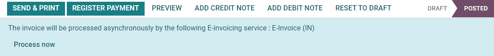
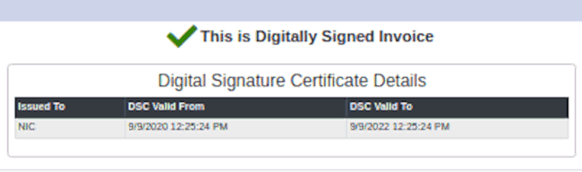
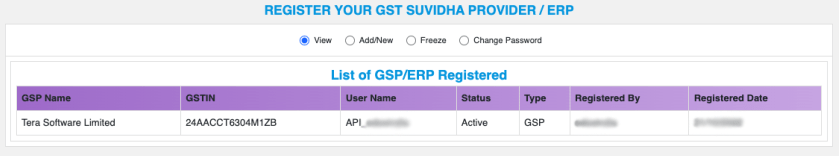
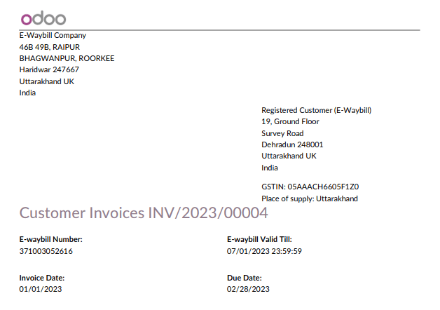
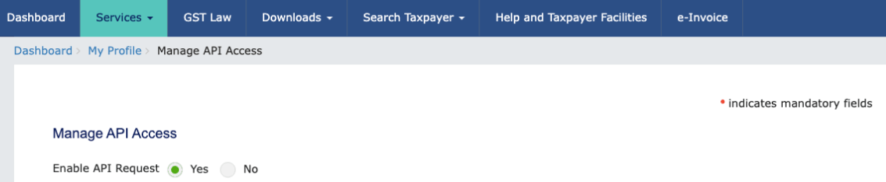
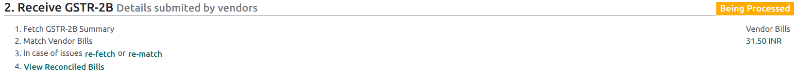
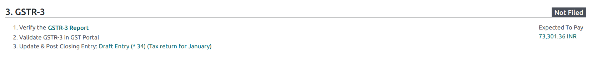
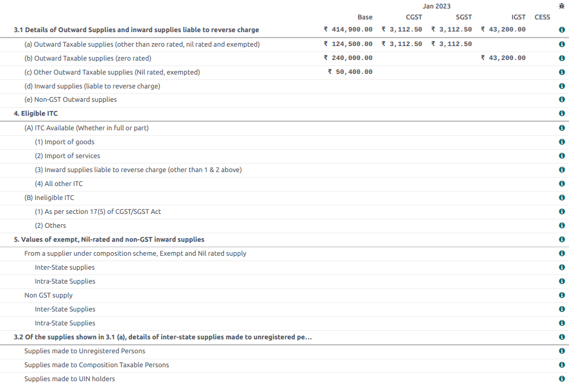

India¶
Installation¶
Install the following modules to get all the features of the Indian localization:
Name |
Technical name |
Description |
|---|---|---|
Indian - Accounting |
|
Default fiscal localization package |
Indian E-invoicing |
|
|
Indian E-waybill |
|
|
Indian - GSTR India eFiling |
|
|
Indian - Accounting Reports |
|
|
Indian - Purchase Report(GST) |
|
Indian GST Purchase report |
Indian - Sale Report(GST) |
|
Indian GST Sale report |
Indian - Stock Report(GST) |
|
Indian GST Stock report |

e-Invoice system¶
Odoo is compliant with the Indian Goods and Services Tax (GST) e-Invoice system requirements.
Setup¶
NIC e-Invoice registration¶
You must register on the NIC e-Invoice portal to get your API credentials. You need these credentials to configure your Odoo Accounting app.
Log in to the NIC e-Invoice portal by clicking Login and entering your Username and Password;
Note
If you are already registered on the NIC portal, you can use the same login credentials.

From the dashboard, go to ;
After that, you should receive an OTP code on your registered mobile number. Enter the OTP code and click Verify OTP;
Select Through GSP for the API interface, set Tera Software Limited as GSP, and type in a Username and Password for your API. Once it is done, click Submit.

Configuration in Odoo¶
To enable the e-Invoice service in Odoo, go to , and enter the Username and Password previously set for the API.

Journals¶
To automatically send e-Invoices to the NIC e-Invoice portal, you must first configure your sales journal by going to , opening your sales journal, and in the Advanced Settings tab, under Electronic Data Interchange, enable E-Invoice (IN) and save.
Workflow¶
Invoice validation¶
Once an invoice is validated, a confirmation message is displayed at the top. Odoo automatically uploads the JSON-signed file of validated invoices to the NIC e-Invoice portal after some time. If you want to process the invoice immediately, click Process now.
Note
You can find the JSON-signed file in the attached files in the chatter.
You can check the document’s EDI status under the EDI Document tab or the Electronic invoicing field of the invoice.
Invoice PDF report¶
Once an invoice is validated and submitted, the invoice PDF report can be printed. The report includes the IRN, Ack. No (acknowledgment number) and Ack. Date (acknowledgment date), and QR code. These certify that the invoice is a valid fiscal document.

e-Invoice cancellation¶
If you want to cancel an e-Invoice, go to the Other info tab of the invoice and fill out the Cancel reason and Cancel remarks fields. Then, click Request EDI cancellation. The status of the Electronic invoicing field changes to To Cancel.
Important
Doing so cancels both the e-Invoice and the E-Way bill.
Note
If you want to abort the cancellation before processing the invoice, then click Call Off EDI Cancellation.
Once you request to cancel the e-Invoice, Odoo automatically submits the JSON-signed file to the NIC e-Invoice portal. You can click Process now if you want to process the invoice immediately.
GST e-Invoice verification¶
After submitting an e-Invoice, you can verify if the invoice is signed from the GST e-Invoice system website itself.
Download the JSON file from the attached files. It can be found in the chatter of the related invoice;
Open the NIC e-Invoice portal and go to ;
Select the JSON file and submit it;
If the file is signed, a confirmation message is displayed.

E-Way bill¶
Setup¶
Odoo is compliant with the Indian Goods and Services Tax (GST) E-waybill system requirements.
API registration on NIC E-Way bill¶
You must register on the NIC E-Way bill portal to create your API credentials. You need these credentials to configure your Odoo Accounting app.
Log in to the NIC E-Way bill portal by clicking Login and entering your Username and Password;
From your dashboard, go to ;
Click Send OTP. Once you have received the code on your registered mobile number, enter it and click Verify OTP;
Check if Tera Software Limited is already on the registered GSP/ERP list. If so, use the username and password used to log in to the NIC portal. Otherwise, follow the next steps;
Select Add/New, select Tera Software Limited as your GSP Name, create a Username and a Password for your API, and click Add.

Configuration in Odoo¶
To set up the E-Way bill service, go to , and enter your Username and Password.

Workflow¶
Send an E-Way bill¶
You can manually send an E-Way bill by clicking Send E-Way bill. To send the E-Way bill automatically when an invoice or a bill is confirmed, enable E-Way bill (IN) in your Sales or Purchase journal.

Invoice validation¶
Once an invoice has been issued and sent via Send E-Way bill, a confirmation message is displayed.

Note
You can find the JSON-signed file in the attached files in the chatter.
Odoo automatically uploads the JSON-signed file to the government portal after some time. Click Process now if you want to process the invoice immediately.
Invoice PDF report¶
You can print the invoice PDF report once you have submitted the E-Way bill. The report includes the E-Way bill number and the E-Way bill validity date.
E-Way bill cancellation¶
If you want to cancel an E-Way bill, go to the E-Way bill tab of the related invoice and fill out the Cancel reason and Cancel remarks fields. Then, click Request EDI Cancellation.
Important
Doing so cancels both the e-Invoice (if applicable) and the E-Way bill.
Note
If you want to abort the cancellation before processing the invoice, click Call Off EDI Cancellation.
Once you request to cancel the E-Way bill, Odoo automatically submits the JSON-signed file to the government portal. You can click Process Now if you want to process the invoice immediately.
Indian GST Return filing¶
Enable API access¶
To file GST Returns in Odoo, you must first enable API access on the GST portal.
Log into the GST portal by entering your Username and Password, and go to My Profile on your profile menu;

Select Manage API Access, and click Yes to enable API access;
Doing so enables a Duration drop-down menu. Select the Duration of your preference, and click Confirm.
Indian GST Service In Odoo¶
Once you have enabled the API access on the GST portal, you can set up the Indian GST Service in Odoo.
Go to and enter the GST Username. Click Send OTP, enter the code, and finally, Validate.

File-in GST Return¶
When the Indian GST Service is configured, you can file your GST return. Go to and create a new GST Return Period if it does not exist. GST Return file-in is done in three steps in Odoo:
Note
Tax Return Periodicity can be configured according to the user’s needs.
Send GSTR-1¶
The user can verify the GSTR-1 report before uploading it to the GST portal by clicking GSTR-1 Report;
If the GSTR-1 report is correct, then click Push to GSTN to send it to the GST portal. The status of the GSTR-1 report changes to Sending;

After a few seconds, the status of the GSTR-1 report changes to Waiting for Status. It means that the GSTR-1 report has been sent to the GST Portal and is being verified on the GST Portal;

Once more, after a few seconds, the status either changes to Sent or Error in Invoice. The status Error in Invoice indicates that some of the invoices are not correctly filled out to be validated by the GST portal;
If the state of the GSTR-1 is Sent, it means your GSTR-1 report is ready to be filed on the GST portal.

If the state of the GSTR-1 is Error in Invoice, invoices can be checked for errors in the Log Note. Once issues have been resolved, the user can click Push to GSTN to submit the file again on the GST portal.


Click Mark as Filed after filing the GSTR-1 report on the GST portal. The status of the report changes to Filed in Odoo.

Receive GSTR-2B¶
Users can retrieve the GSTR-2B Report from the GST portal. This automatically reconciles the GSTR-2B report with your Odoo bills;
Click Fetch GSTR-2B Summary to retrieve the GSTR-2B summary. After a few seconds, the status of the report changes to Waiting for Reception. This means Odoo is trying to receive the GSTR-2B report from the GST portal;

Once more, after a few seconds, the status of the GSTR-2B changes to the Being Processed. It means Odoo is reconciling the GSTR-2B report with your Odoo bills;
Once it is done, the status of the GSTR-2B report changes to either Matched or Partially Matched;
If the status is Matched:

If the status is Partially Matched, you can make changes in bills by clicking View Reconciled Bills. Once it is done, click re-match.


GSTR-3 report¶
The GSTR-3 report is a monthly summary of sales and purchases. This return is auto-generated by extracting information from GSTR-1 and GSTR-2.
Users can compare the GSTR-3 report with the GSTR-3 report available on the GST portal to verify if they match by clicking GSTR-3 Report;
Once the GSTR-3 report has been verified by the user and the tax amount on the GST portal has been paid. Once paid, the report can be closed by clicking Closing Entry;
In Closing Entry, add the tax amount paid on the GST portal using challan, and click POST to post the Closing Entry;

Once posted, the GSTR-3 report status changes to Filed.
Tax reports¶
GSTR-1 report¶
The GSTR-1 report is divided into sections. It displays the Base amount, CGST, SGST, IGST, and CESS for each section.

GSTR-3 report¶
The GSTR-3 report contains different sections:
Details of inward and outward supply subject to a reverse charge;
Eligible ITC;
Values of exempt, Nil-rated, and non-GST inward supply;
Details of inter-state supplies made to unregistered persons.
